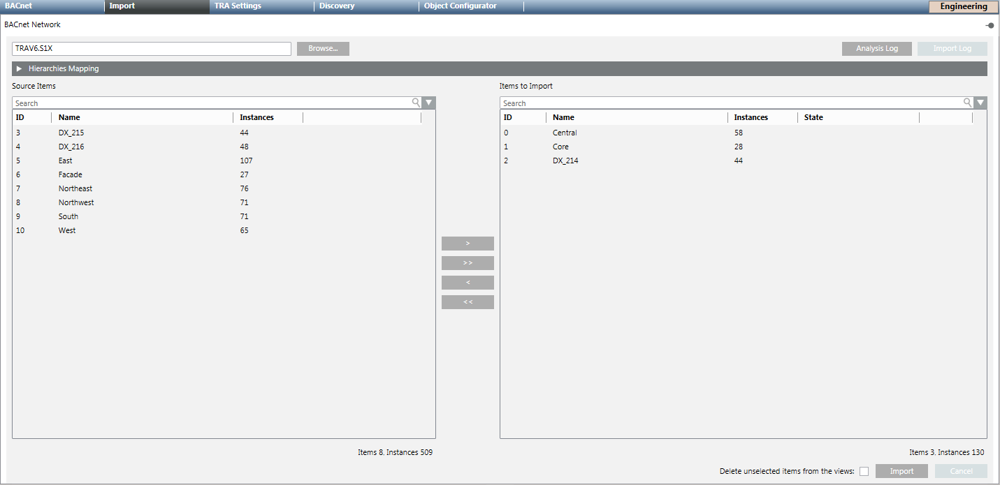

Perform a New Data Import
Scenario: You want to perform a new data import, since the export data from the engineering tool has changed.
Reference: For background information, see the Desigo Automation section.
Prerequisites:
- System Manager is in Engineering mode.
- System Browser is in Management View.

To speed configuration, make sure the Desigo CC Transaction Mode is set to Simple or the Automatic Switch of Transaction Mode is set to True.
The automatic switch setting is recommended. Without it, to re-enable the logs, you need to set the Transaction Mode to Logging at the end of the configuration procedure.
Steps:
1 – Define Import Settings
- Select Project > Field Networks > [Network name].
- Select the Desigo Building Automation tab.
- Open the Extended Import Rules expander.
- In the Extended Import Rules drop-down list box, select one of the following options:
- None
- All I/O data points for large open offices
- All I/O data points with a user designation
- All I/O data points - For Graphical depiction of individual segment rooms:
- No change to default response
- Consider only rooms with one segment. NOTE: The Depiction for a Room with Only One Segment is displayed on a graphic template if the function is selected. This setting applies to the entire network.
- Note rooms with HVAC information in only one segment. - Select Do not import unused points.
NOTE: If selected, no data points are imported that have, under property Object Usage, the state Not Used: By operation, Not Used: By propagation oder Not Used: Operation/propagation.
The data volume for import can be significantly reduced depending on the application. - Select the Show connect objects only check box.
NOTE: Only Special Features of Desigo Automation are displayed in the Logical View if the function is selected. Owned objects are displayed that have no link to a connect object. - Enable check box Import IOs with UD as independent object.
NOTE: If enabled, all objects and child objects with a user designation are imported. For more information, see section Desigo Building Automation Pane. - Click Save
 .
.
2 – (Optional) Only for Updated Firmware for BACnet Router or Web Gateway
This step is mandatory if the firmware on the existing BACnet router (PXG3.L) or web gateway (PXM50.E) was updated to the new product family (PXC4/PXC5).
Reason: The device must be deleted before you can reimport new data since the data structure for the same device ID comes from another product family. Failing to delete the device may result in errors in the graphic, documents, links, etc.
- Select Project > Subsystem Networks > [network name] > Hardware > [device name].
- Select the BACnet tab.
- Click Delete
 .
. - A confirmation message displays.
- Click Yes.
- The device is deleted and can be imported in step 4 with new data.
3 – Import Project Data Files
- Select the Import tab.
- The Import page displays.
- Click Open on the top left margin to go to the data files.
- In the File type drop-down list, select the data type Desigo (*.s1x).
- Select the desired import files.
- ABT Export Files
- BACnet router files (for updated firmware, execute step 3 first)
- Web gateway files (for updated firmware, execute step 3 first)
- Click Open.
- The preprocessor analyzes the selected file. Click Log Analysis for additional information in the event of a problem.
- Click the Source list
 .
.
NOTE: If Delete unselected items from the views is selected, all automation stations and linked objects are deleted that are not in the selected import file. The main nodes must be manually deleted in the Logical View and User View. - Click Import.
- The import procedure starts with the first file in the Items to Import list. The State can be:
Completed, Failed, In progress (%), Partially completed[Number of failed instances]. - A message is displayed at the end of the import process that summarizes the results in a detailed log. Click Import log.
NOTE: The import is not executed if the number of data points exceeds system limits. Check the Changing Project Size of Data Points.
NOTE:
The import must be performed again if you change the driver configuration.
